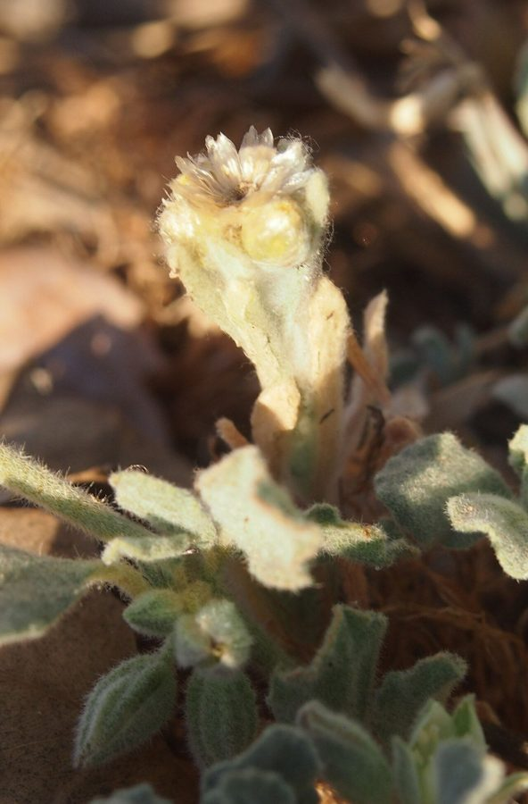

गंधी बूटीLotus Sweetjuice
Glinus lotoides · Molluginaceae · FLR-0235

- Scientific name वैज्ञानिक नाम
- Glinus lotoides L.
- Family कुल
- Molluginaceae
- Hindi हिंदी
- गंधी बूटी
- Local names स्थानीय नाम
- gandhi buti, gandhi booti, glinus, lotus sweetjuice
- Status here यहाँ की स्थिति
- native
- Movement आवागमन
- Resident, here all year
- Known from कहाँ दर्ज
- Others have published records from the wider Awadh–Purvanchal plain, none yet from Basti–Ayodhya अवध–पूर्वांचल से दूसरों के प्रकाशित अभिलेख, बस्ती–अयोध्या से अभी नहीं
- IUCN IUCN
- not evaluated
- Review समीक्षा
- audited and independently read
When to look कब देखें
Expected mainly in April, May, June, July, August, September, October. मुख्यतः अप्रैल, मई, जून, जुलाई, अगस्त, सितंबर, अक्टूबर में अपेक्षित।
Uses and possibilities उपयोग और संभावनाएँ
“Traditional medicine” means a documented traditional use, not a claim that it works. Nothing on this page is medical advice.
Drawn from the documented uses in the profile below, where each is labelled traditional, current or a research lead. All uses →
गंधी बूटी / Lotus Sweetjuice
Glinus lotoides L. — Molluginaceae
गंधी बूटी — गर्मी के दिनों में खेतों, बाग़ों और नम जगहों पर उगने वाला भारतीय पौधा जिसकी पत्तियाँ और तना रसीले (succulent) और थोड़े से नमकीन होते हैं। पत्तियाँ गोल, एक दूसरे के विपरीत, और पूरे पौधे पर छोटे सफेद बाल होते हैं। गर्मी की शुरुआत में छोटे-छोटे सफेद फूल और फिर तारे जैसे फल। लोग इसे सलाद में कच्चा खाते हैं और आयुर्वेद में इसकी पत्तियों का उपयोग दस्त और बुखार के इलाज में किया जाता है।
Quick Identification त्वरित पहचान
| Feature | Description |
|---|---|
| Plant form | Prostrate to ascending, succulent annual, 15–40 cm, fleshy throughout |
| Leaves | Opposite, obovate to spatulate, 0.5–1.5 cm, fleshy, smooth or slightly hairy |
| Flowers | Small, white, 2–3 mm, in compact axillary clusters, 3–5 petals |
| Fruit | Star-shaped (stellate) capsule, 5–8 mm across, radially splayed segments |
| Stem | Fleshy, greenish or reddish, covered with minute hairs |
| The test | Squeeze a leaf — it is moist and succulent, slightly salty to taste |
Field tip: Look for a low, creeping succulent plant with opposite fleshy leaves and very small white flowers in summer vegetable fields. The distinctive star-shaped seed pod is diagnostic. The plant is often overlooked because of its small stature and soft texture.
हिंदी — कैसे पहचानें: रसीला पौधा, पत्तियाँ मोटी और नरम। गर्मी में सफेद फूल, फिर तारे जैसे फल।
Morphology आकारिकी
Biometrics (typical measurements in Indian agricultural areas):
| Measurement | Range |
|---|---|
| Plant height | 15–40 cm |
| Leaf length | 0.5–1.5 cm |
| Leaf width | 0.4–1 cm |
| Flower diameter | 2–3 mm |
| Fruit diameter | 5–8 mm |
Stem: Fleshy, succulent, greenish or reddish, glabrous or covered with minute white hairs, rooting at lower nodes where they contact moist soil.
Leaves: Opposite, simple, sessile or short-petioled, obovate to spatulate, rounded at the apex, entire, fleshy (full of water storage tissue), and smooth. The lamina is thick.
Flowers: Small, white or pale pink, actinomorphic, 3–5 petals (usually 5), emerging from axils in compact clusters. Stamens usually 3–5. The flowers open in afternoon and close by evening.
Fruit: A distinctive stellate (star-shaped) capsule with 5–8 radial lobes, each lobe being a locule containing 2–4 black seeds. The entire structure opens in a starfish pattern to release seeds.
Succulence: The entire plant is succulent, with water storage cells in leaves, stems, and even the fruit. This adaptation is for drought tolerance and explains the plant's salt tolerance.
हिंदी: पूरा पौधा रसीला (succulent) है। तारे जैसे फल में बीज।
Behaviour & Ecology व्यवहार और पारिस्थितिकी
Glinus lotoides is a drought-tolerant, summer-growing annual of African and Asian origin. In eastern UP it is a minor weed of summer cultivation (May–October), particularly in vegetable gardens and field margins where soil moisture is available in the warm season. The plant grows rapidly in hot weather and is not strongly competitive with established crops.
The plant is halophytic (salt-tolerant), which allows it to thrive on usar (alkaline) soils where many weeds cannot. Small insects visit the flowers for nectar and pollen.
हिंदी: गर्मी की ऋतु में तेजी से बढ़ता है। ऊसर ज़मीन पर भी चल सकता है।
Life Cycle / Phenology जीवन चक्र
| Month / season | Event |
|---|---|
| April–May | Seed germinates with warming soil and early rains |
| May–July | Vegetative growth; plant forms spreading rosette |
| July–September | Flowering; continuous bloom in warm season |
| September–October | Fruiting; seed ripening; plant begins to senesce |
Seeds are long-lived in soil and germinate upon warming. The plant is an obligate summer annual and does not survive frost.
हिंदी: अप्रैल-मई में अंकुरण, जुलाई-सितंबर में फूल, अक्टूबर तक बीज।
Associated Species / Interactions संबंधित प्रजातियाँ
- Summer field associates: Found with other summer weeds such as purslane and amaranth species in vegetable fields.
- Vegetable crop companions: Common in summer vegetable crops (squash, cucumber, tomato, peppers) where it is easily hand-removed.
- Seed dispersal: Spread by water, on farm tools, and occasionally by livestock.
Pests and Diseases कीट और रोग
- No specific pests or serious diseases; the succulent leaves occasionally attract leaf-eating beetles.
- Fungal rots may occur in very wet conditions but are rare.
Agricultural / Human Relevance कृषि प्रासंगिकता
As a weed:
Glinus lotoides is a minor weed of summer cultivation in eastern UP. Its succulent, soft nature makes it easy to pull by hand, and it does not persist if the field is fallowed. Farmers often do not consider it a significant pest.
Traditional and ethnobotanical use (documented traditional uses; not medical advice):
- Edible greens: The leaves and tender shoots are eaten as a cooked green or in salads in parts of India, with a slightly salty, succulent taste. This traditional use is documented in ethnobotanical surveys.
- Ayurvedic medicine: The plant is listed in Ayurvedic pharmacopoeias as having cooling (shita) and digestive properties. Traditionally, the leaf extract or juice is used for diarrhoea and fever, and as a purgative. Chopra et al. (1956) lists it as Glinus lotoides, with uses for digestive complaints.
- Livestock fodder: The fleshy leaves are eaten by goats and sheep, though it is not a preferred fodder plant.
Today. The plant is a minor weed and occasional edible green in Indian agriculture.
Research direction (a lead, not a result). The salt tolerance of Glinus lotoides could be useful in research on crop varieties for usar-prone soils, and the traditional edibility and medicinal use warrant ethnobotanical documentation.
हिंदी: सलाद में खाया जाता है। पेट के रोगों के लिए पारंपरिक दवा। ऊसर भूमि पर भी उगता है।
Expected Locally स्थानीय रूप से अपेक्षित
Not a field record. Written from published accounts for eastern Uttar Pradesh. No confirmed local sighting yet — if you have seen it, that is what the atlas needs.
अभी तक स्थानीय पुष्टि नहीं। यह विवरण प्रकाशित स्रोतों से है, किसी अवलोकन से नहीं।
To be expected in Basti district during the warm season (April–October) in vegetable gardens, field margins, and usar soils. GBIF holds published records from the wider Awadh–Purvanchal plain, none yet from Basti–Ayodhya. A first local record would be a photograph with place and date, submitted via the About page.
Distribution वितरण
Global range: Native to Africa and tropical Asia. Distributed widely across tropical and subtropical Africa, India, and Southeast Asia.
In India: Widespread in agricultural areas and wastelands of the plains and peninsular regions; more common in the east.
In Uttar Pradesh: Common in vegetable cultivation and field margins across eastern UP.
In Basti district / eastern UP: Expected in summer cultivation; GBIF records from the wider region.
Research Questions शोध प्रश्न
Anyone can investigate these | कोई भी इन प्रश्नों की जाँच कर सकता है
- How many star-shaped seed pods does one Glinus plant produce in a season, and how long are the seeds viable in soil? — Grow a plant; count fruit production; store seeds and test germination.
- Do farmers in your village eat Glinus leaves, and if so, when and how are they prepared? — Ask five farming households who tend summer vegetables; record the preparation.
- Can you taste the saltiness of Glinus leaves from different soils — from usar land versus normal cultivated soil — and is the taste stronger in one? — Collect leaves from both soil types; taste blind; record the difference.
- Which insects feed on the flowers and leaves of Glinus during the hot season? — Observe plants in May, July, and September for 30 minutes; list visitors.
- Does the plant grow taller or spread faster in shaded edges of fields than in full sun? / क्या धूप में और छाया में इस पौधे की बढ़ोतरी में फर्क होता है? — Measure plant dimensions at both locations across four weeks.
Similar Species मिलती-जुलती प्रजातियाँ
| Species | How to tell apart | हिंदी |
|---|---|---|
| purslane (Portulaca oleracea) | Leaves more fleshy and rounded; red or yellow flowers; lacks stellate fruit | पत्तियाँ और भी मोटी, पीले-लाल फूल |
| Mollugo verticillata | Leaves in whorls of three or more at each node, not opposite; flowers white, in clusters but not stellate fruit | पत्तियाँ चक्रों में, सितारे जैसा नहीं |
| Amaranthus species | Leaves alternate; flowers in rigid upright spikes, not white axillary clusters | पत्तियाँ एक ओर, फूल सीधे खड़े |
Field rule: A prostrate succulent plant with opposite fleshy leaves, small white axillary flowers, and a distinctive 5–8-pointed star-shaped seed pod is Glinus lotoides.
Taxonomy & Classification वर्गीकरण
Original description. Described by Carl Linnaeus in 1753 in Species Plantarum, p. 148. The epithet lotoides means "resembling lotus" (referring to its habitat in wet places).
Subspecies. Monotypic — no subspecies currently recognised, though African and Asian populations may differ subtly.
Family and order placement. Molluginaceae, order Caryophyllales. The genus Glinus holds about 4–6 species of tropical origin.
Phylogenetic notes. Glinus lotoides is the most widely distributed Glinus species and appears to be ancestral to other members of the genus.
IUCN status rationale. Not evaluated. Widespread; not assessed.
Photo Gallery फोटो गैलरी
Photos needed आवश्यक फोटो
- [ ] Whole plant showing spreading habit (पूरा पौधा)
- [ ] Close view of opposite fleshy leaves (पत्तियाँ)
- [ ] White flowers in axils (फूल)
- [ ] Star-shaped fruit pods (तारे जैसे फल)
No photos yet — add field photos to media/species/lotus_sweetjuice/ and run node scripts/sync_photos.js.
References संदर्भ
- Linnaeus, C. (1753). Species Plantarum. Laurentii Salvii, Holmiae, Vol. 1, p. 148. [original description]
- Hooker, J.D. (1872). The Flora of British India, Vol. 1. L. Reeve, London.
- Duthie, J.F. (1903). Flora of the Upper Gangetic Plain and of the Adjacent Siwalik and Sub-Himalayan Tracts. Government Printing, Calcutta.
- Chopra, R.N., Nayar, S.L. & Chopra, I.C. (1956). Glossary of Indian Medicinal Plants. CSIR, New Delhi.
- Kirtikar, K.R. & Basu, B.D. (1935). Indian Medicinal Plants, 2nd ed., Vol. 2. Lalit Mohan Basu, Allahabad.
- GBIF Occurrence Data — Glinus lotoides, India (2026).
Source file: species/flora/crops_associated/lotus_sweetjuice.md